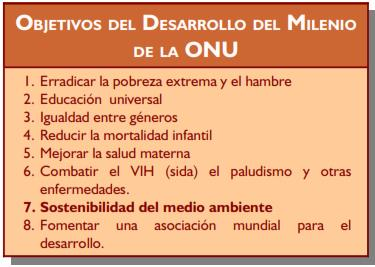

9. Desarrollo sostenible
La principal finalidad de la tecnología es transformar el entorno humano, natural y social, para adaptarlo mejor a las necesidades y deseos humanos. La creciente adaptación de los ambientes naturales, la extracción de materiales o su contaminación está generando graves problemas de difícil reversión, sobrepasando en muchos casos la capacidad de regeneración de los ecosistemas. Algunos ejemplos son la deforestación, la contaminación de suelos, aguas y atmósfera, el calentamiento global, el cambio climático, la lluvia ácida, la desaparición de especies, desertización.....
En muchos países, tras tomar conciencia de dichos problemas, se obliga a realizar estudios sobre el impacto ambiental que tendrá una obra (construir un camino, carretera, una fábrica....) antes de su ejecución. Estos estudios tienen como fin el intentar minimizar los impactos negativos sobre el ambiente y maximizar los impactos positivos (ejemplo: obras para prevención de inundaciones....). Para eliminar completamente los impactos ambientales negativos no debe tomarse de la naturaleza o incorporar a ella (por ejemplo contaminantes) más de lo que es capaz de reponer o eliminar por sí misma. Por ejemplo, si se arrojan contaminantes a un río, la cantidad debe ser menor a la capacidad natural de degradación; al talarse un árbol debería plantarse al menos otro.....
Se entiende como desarrollo sostenible, aquel que satisface las necesidades básicas de las generaciones presentes, sin comprometer de manera irreversible la capacidad de las futuras generaciones. Dicho concepto tiene metas más modestas que el inalcanzable impacto ambiental nulo. En la UE, las políticas del desarrollo sostenible se centran en 5 ámbitos de actuación:
- Introducción de tecnologías limpias en distintos sectores como las industrias de transformación de metales, las industrias gráficas, la industria agroalimentaria, los curtidos....
- Políticas de gestión de residuos, desde la recogida hasta su eliminación.
- Integración de la agricultura en el medio ambiente.
- Integración respetuosa del turismo en el medio ambiente.
- Mejora de la calidad el entorno urbano.
Obra publicada con Licencia Creative Commons Reconocimiento No comercial Compartir igual 4.0